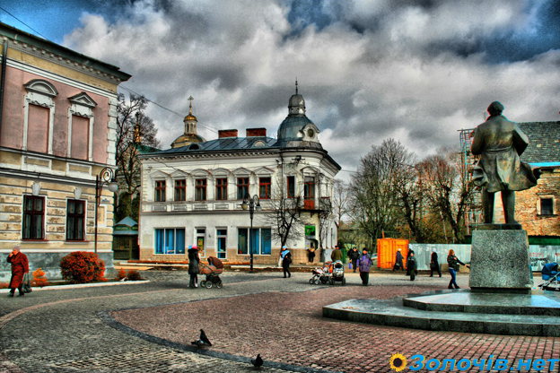
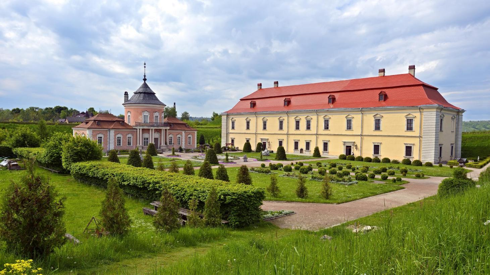

Золочів

Золочів — місто районного значення Золочівського району Львівської області, районний центр. Розташоване за 64 км від Львова на автошляху Рава-Руська — Тернопіль . Територія міста становить 11,64 км2, населення — 24 тис. мешканців.
- Церква Воскресіння Господнього
- Церква всіх святих землі Української УАПЦ
- Церква св. Трійці УПЦ КП
- Синагога 1724 року
- Парафіяльний Вознесенський костел (1731—1763)
- Василіянський монастир
- Церква св. Миколая XVI століття з елементами оборонної архітектури
- Греко-католицька церква Блаженного Миколая Чарнецького
- Монастир Чесного Хреста Св. Дам'яна
Золочів є одним з небагатьох міст, яке може похвалитись стародавнім замком. Могутній оборонний замок з Китайським і Великим палацами є унікальною пам'яткою архітектури першої половини XVII століття.
З екзотичних атракцій замку у Золочеві варто відзначити ритуал загадування бажання біля каменів з зашифрованими надписами XV століття. У затишку замкового парку привертає увагу сучасна капличка-пам'ятник жертвам НКВС, невинно закатованими у замку-в'язниці у червні 1941 року. (Золочівський замок з 1872 по 1950 1954 роки був в'язницею). Авторами каплички-пам'ятника є відомі львівські митці: скульптор — Теодозія Бриж, художники — Євген та Ярема Безніски, архітектор — Василь Каменщик.

- Пам'ятник Маркіянові Шашкевичу
- Пам'ятник В'ячеславові Чорноволу
- Пам'ятник Тарасові Шевченку